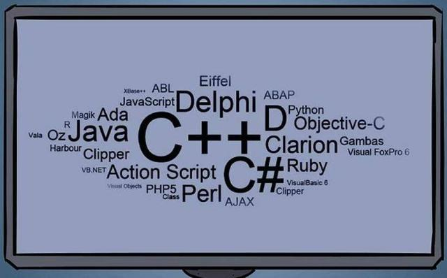

<!DOCTYPE html><html><head><meta charset="utf-8"><title>程序员：为什么几个月后我自己写的代码也看不懂了？ | 技术学派</title><meta name="viewport" content="width=device-width,initial-scale=1,maximum-scale=1"><meta name="keywords" content="IT培训, Python, 大数据, 人工智能, Web前端, PHP, "><meta name="description" content="写在开始的”注释很重要”，”注释很重要”，”注释很重要”，重要的事情说三遍。程序员们大多都会有过这样的经历，就是要看别人写的代码。比如说公司有同事离职了，他的业务就需要有其它的小伙伴们给接下来继续维护。这对好多程序员来说是一种折磨，边看边骂，这写的是什么东西呀。相信好多人都有这种经历。那么为什么会出现这样一个局面呢，其实这里面就有很多讲究的地方了，如果不注意的话，不光是看不懂别人写的代码，即使是自"><meta property="og:type" content="article"><meta property="og:title" content="程序员：为什么几个月后我自己写的代码也看不懂了？"><meta property="og:url" content="http://www.JiShuXuePai.com/blog/学习答疑/学习答疑/程序员：为什么几个月后我自己写的代码也看不懂了？/index.html"><meta property="og:site_name" content="技术学派"><meta property="og:description" content="写在开始的”注释很重要”，”注释很重要”，”注释很重要”，重要的事情说三遍。程序员们大多都会有过这样的经历，就是要看别人写的代码。比如说公司有同事离职了，他的业务就需要有其它的小伙伴们给接下来继续维护。这对好多程序员来说是一种折磨，边看边骂，这写的是什么东西呀。相信好多人都有这种经历。那么为什么会出现这样一个局面呢，其实这里面就有很多讲究的地方了，如果不注意的话，不光是看不懂别人写的代码，即使是自"><meta property="og:locale" content="zh-CN"><meta property="og:image" content="http://www.jishuxuepai.com/blog/学习答疑/学习答疑/程序员：为什么几个月后我自己写的代码也看不懂了？/1.jpg"><meta property="og:updated_time" content="2018-07-09T03:59:33.000Z"><meta name="twitter:card" content="summary"><meta name="twitter:title" content="程序员：为什么几个月后我自己写的代码也看不懂了？"><meta name="twitter:description" content="写在开始的”注释很重要”，”注释很重要”，”注释很重要”，重要的事情说三遍。程序员们大多都会有过这样的经历，就是要看别人写的代码。比如说公司有同事离职了，他的业务就需要有其它的小伙伴们给接下来继续维护。这对好多程序员来说是一种折磨，边看边骂，这写的是什么东西呀。相信好多人都有这种经历。那么为什么会出现这样一个局面呢，其实这里面就有很多讲究的地方了，如果不注意的话，不光是看不懂别人写的代码，即使是自"><meta name="twitter:image" content="http://www.jishuxuepai.com/blog/学习答疑/学习答疑/程序员：为什么几个月后我自己写的代码也看不懂了？/1.jpg"><link rel="stylesheet" href="/libs/bootstrap/bootstrap-grid.css"><link rel="stylesheet" href="/libs/font-awesome/css/font-awesome.min.css"><link rel="stylesheet" href="/libs/titillium-web/styles.css"><link rel="stylesheet" href="/libs/source-code-pro/styles.css"><link rel="stylesheet" href="/css/style.css"><script src="/libs/jquery/jquery.min.js"></script><link rel="stylesheet" href="/libs/lightgallery/css/lightgallery.min.css"><link rel="stylesheet" href="/libs/justified-gallery/justifiedGallery.min.css"><script>var _hmt=_hmt||[];!function(){var e=document.createElement("script");e.src="//hm.baidu.com/hm.js?4c1bd812de3c30edbaa2b803c66f0a04";var t=document.getElementsByTagName("script")[0];t.parentNode.insertBefore(e,t)}()</script></head></html><body><div id="wrap"><header id="header"><div id="header-outer" class="outer"><div class="container"><div class="container-inner"><div id="header-title"><h1 class="logo-wrap"><a href="/" class="logo"></a></h1></div><div id="header-inner" class="nav-container"><a id="main-nav-toggle" class="nav-icon fa fa-bars">菜单</a><div class="nav-container-inner"><ul id="main-nav"><li class="main-nav-list-item"><a class="main-nav-list-link" href="/">主页</a></li><li class="main-nav-list-item"><a class="main-nav-list-link" href="/edu/index.html">学编程</a></li><li class="main-nav-list-item"><a class="main-nav-list-link" href="/blog/">博客</a></li><li class="main-nav-list-item"><a class="main-nav-list-link" href="/tips.html">学习建议</a></li><li class="main-nav-list-item"><a class="main-nav-list-link" href="/about.html">关于</a></li></ul><nav id="sub-nav"><div id="search-form-wrap"><form class="search-form"><input type="text" class="ins-search-input search-form-input" placeholder="搜索"> <button type="submit" class="search-form-submit"></button></form><div class="ins-search"><div class="ins-search-mask"></div><div class="ins-search-container"><div class="ins-input-wrapper"><input type="text" class="ins-search-input" placeholder="想要查找什么..."> <span class="ins-close ins-selectable"><i class="fa fa-times-circle"></i></span></div><div class="ins-section-wrapper"><div class="ins-section-container"></div></div></div></div><script>window.INSIGHT_CONFIG={TRANSLATION:{POSTS:"文章",PAGES:"页面",CATEGORIES:"分类",TAGS:"标签",UNTITLED:"(未命名)"},ROOT_URL:"/",CONTENT_URL:"/content.json"}</script><script src="/js/insight.js"></script></div></nav></div></div></div></div></div></header><div class="container"><div class="main-body container-inner"><div class="main-body-inner"><section id="main"><div class="main-body-header"><h1 class="header"><a class="page-title-link" href="/categories/学习答疑/">学习答疑</a><div class="author"></div></h1></div><div class="main-body-content"><article id="post-学习答疑/程序员：为什么几个月后我自己写的代码也看不懂了？" class="article article-single article-type-post" itemscope itemprop="blogPost"><div class="article-inner"><header class="article-header"><h1 class="article-title" itemprop="name">程序员：为什么几个月后我自己写的代码也看不懂了？</h1></header><div class="article-meta"><div class="article-date"><a href="/blog/学习答疑/学习答疑/程序员：为什么几个月后我自己写的代码也看不懂了？/" class="article-date"><time datetime="2018-06-12T07:40:42.000Z" itemprop="datePublished">2018-06-12</time></a></div></div><div class="article-entry" itemprop="articleBody"><p>写在开始的”注释很重要”，”注释很重要”，”注释很重要”，重要的事情说三遍。</p><p>程序员们大多都会有过这样的经历，就是要看别人写的代码。比如说公司有同事离职了，他的业务就需要有其它的小伙伴们给接下来继续维护。这对好多程序员来说是一种折磨，边看边骂，这写的是什么东西呀。相信好多人都有这种经历。</p><p>那么为什么会出现这样一个局面呢，其实这里面就有很多讲究的地方了，如果不注意的话，不光是看不懂别人写的代码，即使是自己写的代码，几个月后你再去瞧瞧，你也会发现，咦，看不懂了呢。那么接下来就分析一下这种情况形成的原因及怎么去解决它们。</p><h3 id="形成这种局面的原因"><a href="#形成这种局面的原因" class="headerlink" title="形成这种局面的原因"></a>形成这种局面的原因</h3><ul><li>面向过程去写代码</li></ul><p>写代码前没有对代码进行设计，完全是随心所欲去实现。对自己的要求比较低，就是“能实现功能就可以了”这种心态去写代码。这样的代码将来是十分不好维护的，别说以后让别人来维护这个代码了，即使几个月后的自己也是非常困难能读懂自己的代码。</p><ul><li>代码没有注释</li></ul><p>代码注释是对读取代码有着非常好的辅助作用，是其他人能够快速的了解代码的功能，同时对自己以后回头来看自己的代码也是十分有帮助的。没有注释的代码就像深夜车灯坏了的汽车一样，虽然能行驶，但是你敢快开么？</p><p></p><ul><li>代码变量名称随意</li></ul><p>比如什么 abc,temp这类变量，这是让谁看的，不根据代码的上下文谁也不知道这是啥意思，如果代码的上下文中全是类似这样的变量，我估计看代码的人会疯掉的。</p><ul><li><p>每个方法分工不明确</p><p>一个方法中夹杂着多种功能，让人看了之后很难说出这个方法是干啥的，也不敢轻易去修改。</p></li><li><p>破除这种局面</p></li></ul><p>不论为自己还是为别人，让以后自己能看懂自己的代码，还是为别人能看懂自己的代码，让自己不挨骂，那么就推荐以下几种方法来规范自己的代码，让别人或者是自己能够轻轻松松看懂自己的代码</p><ul><li>实现功能前先设计好代码</li></ul><p>最好是面向对象的方式编程，不论是java还是Python都能很好的应用面向对象的方式进行编程，设计好文件名，类名，以及方法名，不论是文件名，还是类名，方法名都要做到见名知意，要用标准的英文去表示，需要用多个英文表示就用驼峰标识来表达。让人看上去结构一目了然，代码看上去让人赏心悦目。</p><ul><li>注释写的尽量详细</li></ul><p>每个类，每个方法都要写明注释， 类的注释可以简明写这个类的主要功能，但是每个方法的注释尽量要写细了，注释一定要覆盖方法中所实现的所有功能，而不是只写其中一部分。看过系统级源码的程序员都知道，注释的行数是比代码的行数还要多的。这就是优秀的习惯，我们也要去学习、掌握。</p><ul><li>不要随便定义临时变量</li></ul><p>尽量不要定义一些临时的变量，如果十分必要定义时，最好是加上单行注释，让其他人知道你的意图。</p><ul><li>不要写过长的方法</li></ul><p>每个方法最好不要超过500行代码，如果过长了，可以考虑该方法的功能点是否可以再次拆分，最好是一个方法就实现单一的一个功能，这样的话方法的复用率也会提高的。</p><ul><li>不要写太“牛逼”的代码了</li></ul><p>有的程序员喜欢写非常有个性的代码，喜欢写一些别人很难看懂的代码，他认为这样才能显示出自己的“高水平”，这样就不是高水平了，只能说代码的可读性太差了，我们要写出傻瓜式代码，也就是说让很傻的程序员都能看懂，”傻瓜式代码” != “低性能代码”哈，这一点要分开。</p><ul><li>中国人就别写英文注释了</li></ul><p>好多国内的程序员给代码写注释用英文写，如果英文非常好的话写英文注释那当然是无可厚非，如果你英文不好，那么还是劝你别写英文注释了，你在折磨自己也折磨别人嘛。</p><p>如果你有什么好的看法或者观点可以在评论区展现你的才华，互动交流，如果想进一步了解我，那就关注我吧。</p></div><footer class="article-footer"><a data-url="http://www.JiShuXuePai.com/blog/学习答疑/学习答疑/程序员：为什么几个月后我自己写的代码也看不懂了？/" data-id="cjjgevlmi006ez8fyp3g1r32k" class="article-share-link"><i class="fa fa-share"></i>分享到</a><script>!function(n){n("body").on("click",function(){n(".article-share-box.on").removeClass("on")}).on("click",".article-share-link",function(t){t.stopPropagation();var e,a=n(this),o=a.attr("data-url"),r=encodeURIComponent(o),i="article-share-box-"+a.attr("data-id"),s=a.offset();if(n("#"+i).length){if((e=n("#"+i)).hasClass("on"))return void e.removeClass("on")}else{var l=['<div id="'+i+'" class="article-share-box">','<input class="article-share-input" value="'+o+'">','<div class="article-share-links">','<a href="https://twitter.com/intent/tweet?url='+r+'" class="article-share-twitter" target="_blank" title="Twitter"></a>','<a href="https://www.facebook.com/sharer.php?u='+r+'" class="article-share-facebook" target="_blank" title="Facebook"></a>','<a href="http://pinterest.com/pin/create/button/?url='+r+'" class="article-share-pinterest" target="_blank" title="Pinterest"></a>','<a href="https://plus.google.com/share?url='+r+'" class="article-share-google" target="_blank" title="Google+"></a>',"</div>","</div>"].join("");e=n(l),n("body").append(e)}n(".article-share-box.on").hide(),e.css({top:s.top+25,left:s.left}).addClass("on")}).on("click",".article-share-box",function(t){t.stopPropagation()}).on("click",".article-share-box-input",function(){n(this).select()}).on("click",".article-share-box-link",function(t){t.preventDefault(),t.stopPropagation(),window.open(this.href,"article-share-box-window-"+Date.now(),"width=500,height=450")})}(jQuery)</script></footer></div></article><section id="comments"><div id="gitalk_frame"></div></section></div></section><aside id="sidebar"><a class="sidebar-toggle" title="Expand Sidebar"><i class="toggle icon"></i></a><div class="sidebar-top"><p>关注我 :</p><ul class="social-links"><li><a class="social-tooltip" title="火星时代" href="http://edu.hxsd.com/edunew/topics/webfull/index.html" target="_blank"><i class="icon fa fa-dribbble"></i></a></li><li><a class="social-tooltip" title="weibo" href="#" target="_blank"><i class="icon fa fa-weibo"></i></a></li><li><a class="social-tooltip" title="rss" href="/atom.xml" target="_blank"><i class="icon fa fa-rss"></i></a></li></ul></div><nav id="article-nav"><a href="/blog/学习答疑/学习答疑/Python相比Java，谁更胜一筹呢？/" id="article-nav-newer" class="article-nav-link-wrap"><strong class="article-nav-caption">下一篇</strong><p class="article-nav-title">Python相比Java，谁更胜一筹呢？</p><i class="icon fa fa-chevron-right" id="icon-chevron-right"></i> </a><a href="/blog/学习答疑/学习答疑/零基础学习Python，快速入门篇/" id="article-nav-older" class="article-nav-link-wrap"><strong class="article-nav-caption">上一篇</strong><p class="article-nav-title">零基础学习Python，快速入门篇</p><i class="icon fa fa-chevron-left" id="icon-chevron-left"></i></a></nav><div class="widgets-container"><div class="widget-wrap widget-list"><h3 class="widget-title">分类</h3><div class="widget"><ul class="category-list"><li class="category-list-item"><a class="category-list-link" href="/categories/animate/">animate</a><span class="category-list-count">17</span></li><li class="category-list-item"><a class="category-list-link" href="/categories/git/">git</a><span class="category-list-count">1</span></li><li class="category-list-item"><a class="category-list-link" href="/categories/html/">html</a><span class="category-list-count">2</span></li><li class="category-list-item"><a class="category-list-link" href="/categories/js/">js</a><span class="category-list-count">5</span></li><li class="category-list-item"><a class="category-list-link" href="/categories/php/">php</a><span class="category-list-count">3</span></li><li class="category-list-item"><a class="category-list-link" href="/categories/vue/">vue</a><span class="category-list-count">1</span></li><li class="category-list-item"><a class="category-list-link" href="/categories/学习答疑/">学习答疑</a><span class="category-list-count">43</span></li><li class="category-list-item"><a class="category-list-link" href="/categories/插件资源库/">插件资源库</a><span class="category-list-count">4</span></li></ul></div></div><link rel="stylesheet" href="/css/tech/toc.css"><div class="widget-wrap widget-list widget-toc"><h3 class="widget-title">目录</h3><div class="widget"><div class="toc"></div><link rel="stylesheet" href="https://cdnjs.cloudflare.com/ajax/libs/tocbot/3.0.5/tocbot.css"><script src="https://cdnjs.cloudflare.com/ajax/libs/tocbot/3.0.5/tocbot.min.js"></script><script>$(function(){$(".main-body-content").find("h1,h2,h3").each(function(t){$(this).attr("id")||$(this).attr("id","list"+t)}),tocbot.init({tocSelector:".toc",contentSelector:".main-body-content",headingSelector:"h1, h2, h3",collapseDepth:2,positionFixedSelector:".widget-toc",fixedSidebarOffset:595,includeHtml:!1})})</script></div></div><div class="widget-wrap widget-list"><h3 class="widget-title">标签</h3><div class="widget"><ul class="tag-list"><li class="tag-list-item"><a class="tag-list-link" href="/tags/C/">C</a><span class="tag-list-count">2</span></li><li class="tag-list-item"><a class="tag-list-link" href="/tags/go/">go</a><span class="tag-list-count">1</span></li><li class="tag-list-item"><a class="tag-list-link" href="/tags/php/">php</a><span class="tag-list-count">1</span></li><li class="tag-list-item"><a class="tag-list-link" href="/tags/python/">python</a><span class="tag-list-count">17</span></li><li class="tag-list-item"><a class="tag-list-link" href="/tags/web前端/">web前端</a><span class="tag-list-count">2</span></li></ul></div></div><div class="widget-wrap widget-float"><h3 class="widget-title">标签云</h3><div class="widget tagcloud"><a href="/tags/C/" style="font-size:15px">C</a> <a href="/tags/go/" style="font-size:10px">go</a> <a href="/tags/php/" style="font-size:10px">php</a> <a href="/tags/python/" style="font-size:20px">python</a> <a href="/tags/web前端/" style="font-size:15px">web前端</a></div></div><div class="widget-wrap widget-list"><h3 class="widget-title">链接</h3><div class="widget"><ul><li><a href="http://edu.hxsd.com/edunew/topics/webfull/index.html">火星时代</a></li></ul></div></div></div></aside><script>$(function(){$(window).scroll(function(){240<=$(document).scrollTop()?($("#sidebar .sidebar-toggle").addClass("fix"),"block"==$("#sidebar .sidebar-toggle").css("display")&&$(".is-position-fixed").css("top","35px")):$("#sidebar .sidebar-toggle").removeClass("fix")})})</script></div></div></div><footer id="footer"><div class="top"><div class="inner"><div class="list"><div class="left clearfix"><dl><dt>关于我们</dt><dd><a href="/about.html" target="_blank">公司简介</a></dd><dd><a href="edu/index.html" target="_blank">联系我们</a></dd></dl><dl><dt>校区攻略</dt><dd><a href="edu/index.html" target="_blank">校区环境</a></dd><dd><a href="edu/index.html" target="_blank">住宿攻略</a></dd><dd><a href="edu/index.html" target="_blank">来校路线</a></dd></dl><dl><dt>课程培训</dt><dd><a href="edu/python.html" target="_blank">Python</a></dd><dd><a href="edu/python.html" target="_blank">Web前端</a></dd><dd><a href="edu/python.html" target="_blank">PHP</a></dd><dd><a href="edu/python.html" target="_blank">人工智能</a></dd><dd><a href="edu/python.html" target="_blank">大数据</a></dd></dl><dl><dt>常见问答</dt><dd><a href="edu/index.html" target="_blank">学费学时</a></dd><dd><a href="edu/index.html" target="_blank">学习方法</a></dd></dl></div></div><div class="tel"><tel>176-0025-8815</tel><span>北京市海淀区杏石口路81号火星时代大厦</span></div><div class="weixin"><div class="w1"> <span>头条号</span></div><div class="w1"> <span>官方微信</span></div></div></div></div><div class="bot">Copyright 2018 技术学派 京ICP备15015508号-3</div></footer><link rel="stylesheet" href="https://unpkg.com/gitalk/dist/gitalk.css"><script src="https://unpkg.com/gitalk/dist/gitalk.min.js"></script><script>var gitalk=new Gitalk({clientID:"2fbbb9980b49019d99a7",clientSecret:"152dd10e83ef6595761ea2185304f9ac8263573f",repo:"jsxp",owner:"li-kang",admin:["li-kang"]});gitalk.render("gitalk_frame")</script><script src="/libs/lightgallery/js/lightgallery.min.js"></script><script src="/libs/lightgallery/js/lg-thumbnail.min.js"></script><script src="/libs/lightgallery/js/lg-pager.min.js"></script><script src="/libs/lightgallery/js/lg-autoplay.min.js"></script><script src="/libs/lightgallery/js/lg-fullscreen.min.js"></script><script src="/libs/lightgallery/js/lg-zoom.min.js"></script><script src="/libs/lightgallery/js/lg-hash.min.js"></script><script src="/libs/lightgallery/js/lg-share.min.js"></script><script src="/libs/lightgallery/js/lg-video.min.js"></script><script src="/libs/justified-gallery/jquery.justifiedGallery.min.js"></script><script src="/js/main.js"></script></div></body>